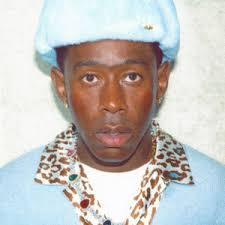
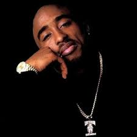

O hip-hop não é apenas uma cultura ou uma música. Ele é um reflexo de
uma sociedade em transformação, um movimento que nasceu das ruas e
conquistou o mundo. Mais do que um gênero musical, o hip-hop é uma
plataforma de expressão, resistência e inovação.
Ao longo das décadas, ele evoluiu e se transformou, mas nunca perdeu sua
essência: dar voz aos marginalizados, àqueles que não têm espaço nas
grandes mídias, aos que lutam por um mundo mais justo. Aqui, vamos
explorar como o hip-hop não só transformou a música, mas também impactou
a moda, as artes visuais, o cinema e a política.
Hoje, o hip-hop é um dos gêneros mais influentes do planeta, presente
nos charts musicais, nas campanhas publicitárias, nas passarelas e até
mesmo nos discursos políticos. Ele conecta gerações, ultrapassa
fronteiras e se reinventa constantemente — e essa página é um convite
para mergulhar nesse universo.
Impacto Cultural do Hip-Hop: Uma Revolução Global
O hip-hop emergiu como uma forma de resistência, surgindo nas ruas do
Bronx, Nova York, em um período de grande desigualdade social. No
entanto, o impacto do hip-hop ultrapassou as fronteiras dos Estados
Unidos e se espalhou pelo mundo. Em cada cidade, em cada esquina, em
cada bairro, o hip-hop encontrou um novo significado.
Hoje, vemos como o hip-hop toca e influencia todos os aspectos da
sociedade. Nas artes, ele redefiniu o conceito de grafite, transformando
o que antes era visto como vandalismo em uma forma legítima de arte
contemporânea. No cinema, filmes como "8 Mile" e "Straight Outta
Compton" ajudaram a narrar histórias de luta e superação, enquanto na
política, o hip-hop tem sido uma poderosa ferramenta para protestos e
mudanças sociais.
Kendrick Lamar, um dos maiores nomes da atualidade, é exemplo vivo desse
impacto: suas músicas não apenas ganharam prêmios como o Pulitzer,
Grammy, mas também dominaram o Hot 100 da Billboard, colocando o rap no
topo das paradas e mostrando ao mundo o poder de sua mensagem lírica e
social como visto na imagem a seguir.
O hip-hop também introduziu um novo modo de pensar a moda. Suas raízes
nas ruas deram origem a um estilo autêntico e irreverente que ressoou
com jovens em todo o mundo. Não é à toa que muitas das marcas mais
reconhecidas do planeta se associaram ao estilo hip-hop, criando
colaborações e coleções exclusivas para esse público fiel e apaixonado.
"falar brevemente ibre top 100 kendrickk com album GNX"
Principais Artistas do Hip-Hop: Lendas e Inovações
O hip-hop é movido por suas lendas e inovadores, artistas que não apenas
transformaram a música, mas também a cultura e a sociedade como um todo.
Eles têm o poder de influenciar comportamentos, ideologias e até
movimentos sociais. De Tupac a Kendrick Lamar, de Doja Cat a Doechii, a
contribuição desses artistas vai além das letras – eles são os
porta-vozes da resistência, da inclusão e da criatividade.
Tupac Shakur: Líder de uma geração, Tupac foi muito
mais do que um rapper; ele foi um pensador e ativista. Suas músicas
como "Changes" e "Dear Mama" abordavam questões de racismo, pobreza e
a luta por justiça social. Sua vida e legado continuam a inspirar
pessoas ao redor do mundo.
The Notorious B.I.G.: "Biggie Smalls" foi o mestre da
narrativa no rap. Suas histórias detalhadas, repletas de temas de
sobrevivência e ascensão social, foram apenas uma das razões pelas
quais ele se tornou uma lenda do hip-hop. Suas letras ainda reverberam
na cultura contemporânea.
Doja Cat: A artista que mistura rap, pop, R&B e
eletrônica de uma maneira única. Doja Cat, com seu estilo irreverente
e divertido, redefiniu o que significa ser uma rapper feminina na
indústria. Com seus sucessos virais, ela se tornou uma das maiores
influências culturais da sua geração.
Doechii: Com uma sonoridade criativa e experimental,
Doechii é uma das artistas mais inovadoras da cena hip-hop atual. Seu
estilo e energia refletem uma nova geração de artistas que estão
quebrando barreiras e redefinindo as regras do rap. Ela também vem se
destacando como referência estética e influenciadora de moda.
Kendrick Lamar: Kendrick é um dos rappers mais
intelectuais e profundos de sua geração. Com álbuns como "To Pimp a
Butterfly" e "DAMN.", ele abordou temas como identidade, política e
espiritualidade de uma forma única e impactante. Sua poesia e visão de
mundo são tão poderosas quanto suas rimas. Ele também fez história ao
liderar rankings como o Hot 100 Billboard.
Tyler, The Creator: Tyler é conhecido por sua
abordagem ousada e criativa tanto na música quanto na moda. Com álbuns
conceituais e letras provocadoras, ele desafia os padrões do gênero.
Sua marca de roupas, Golf Wang, é referência no streetwear, mostrando
como ele traduz seu universo artístico em estilo pessoal e autêntico.
Através de suas músicas e mensagens, esses artistas continuam a ser a
força motriz do hip-hop, inspirando milhares de fãs ao redor do planeta.
O impacto deles vai além da música: eles são catalisadores de mudanças
sociais e culturais.
DOJA CAT
@dojacat.

Tyler the Creator
@feliciathegoat.

tupac *
@tupac
Hip-hop e a Moda: O Estilo que Quebrou Barreiras
A moda hip-hop é um reflexo da sua atitude: ousada, autêntica e sem
limitações. Quando falamos de estilo hip-hop, não estamos apenas falando
de roupas, mas de uma filosofia de vida que combina individualidade,
liberdade e atitude.
Marcas como Adidas, Nike, Supreme e Off-White se uniram ao movimento
hip-hop, criando colaborações que não só celebram o estilo urbano, mas
também refletem as questões sociais e políticas enfrentadas pelos jovens
nas ruas. O uso de peças de roupas como hoodies oversized, tênis
exclusivos, bonés e joias chamativas transmite um recado claro: o
hip-hop não segue regras.
Kanye West, com sua marca Yeezy, redefiniu a indústria
da moda ao levar o estilo de rua diretamente para as passarelas. Sua
colaboração com a Adidas para criar tênis e roupas de alta performance
com um design minimalista conquistou o mundo, fazendo do Yeezy um dos
maiores sucessos da história do mercado de moda. Kanye não é apenas um
rapper; ele é uma das figuras mais importantes quando se trata de unir
música, moda e cultura.
E não podemos esquecer de Travis Scott, que se tornou um ícone não
apenas na música, mas também no mundo da moda. Sua colaboração com a
marca Nike e suas participações em desfiles de moda, como o famoso
desfile Vetements, fizeram dele um dos artistas mais
influentes no cruzamento entre a música e o estilo. Travis levou a
estética do hip-hop para as passarelas de alta costura, tornando-se um
modelo de como a cultura de rua pode se fundir com o luxo, Playboy
Carti, com o Estética Opium.
Doechii também vem se destacando como ícone fashion, misturando
referências futuristas e urbanas com ousadia. Já Tyler, The Creator, com
sua Golf Wang, reinventou o streetwear com cores vibrantes e cortes
únicos, sendo hoje um dos maiores nomes quando o assunto é identidade
visual no hip-hop.
Mas o impacto da moda hip-hop vai além do que é visto nas ruas. As
passarelas e revistas de moda começaram a incorporar esses estilos,
refletindo a força da cultura hip-hop nas tendências globais. O que
começou como um estilo de rua se tornou um fenômeno global, com o
hip-hop se tornando a principal referência para muitos criadores de
tendências.
O hip-hop não é apenas sobre o que você veste, mas sobre o que você
representa. Cada peça de roupa conta uma história, cada cor e acessório
transmite uma mensagem. O hip-hop, portanto, é um movimento cultural que
não se limita a um gênero musical, mas se expande por todas as formas de
expressão humana.